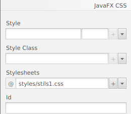

CSS (Cascading Style Sheets) és un llenguatge de disseny que s’utilitza per a millorar l’aparença de les pàgines web sense canviar la seua funcionalitat. Només s’ocupa de la forma en què es presenta una pàgina web en el navegador web.
Usant CSS, podem definir el color, grandària, estils de font, espaiat entre el paràgraf, alineació i moltes coses més per a una pàgina web perquè es veja millor i més precisa. També podem configurar el fons de l’aplicació, el disseny, el disseny i la varietat de visualització per als dispositius de diferents grandàries.
Per Observar les diferents propietats que se li poden asignar a qualsevol elements que tingam en la nostra aplicació, pot consultar la següent pàgina -> guia de referencia CSS de JavaFX
JavaFX proporciona el paquet javafx.css que conté totes les classes per a aplicar CSS a l’aplicació JavaFX.
Aplicar CSS a l’aplicació JavaFX és similar a aplicar CSS a la pàgina HTML.
JavaFX usa caspian.css com a arxiu CSS predeterminat. Es troba en l’arxiu JAR de temps d’execució de JavaFX, jfxrt.jar. Aquesta fulla d’estil defineix les regles d’estil predeterminades per al node arrel i els controls d’IU. Aquest arxiu es troba en la ruta /jre/lib sota el directori d’instal·lació de JDK. El següent comando es pot utilitzar per a extraure la fulla d’estil de l’arxiu JAR.
# jar xf jfxrt.jar
# com/sun/javafx/scene/control/skin/caspian/caspian.css
JavaFX ens brinda la possibilitat d’anul·lar la fulla d’estil predeterminada i definir els nostres propis estils per a cada node de l’aplicació. La fulla d’estil que creguem ha de tindre l’extensió .css i ha d’estar situada en el directori on resideix la classe principal de l’aplicació.
Podem fer-ho des del mateix codi o des de l’scene Builder:
Scene scene = new Scene(root,500,400);
scene.getStylesheet().add("path/Stylesheet.css");

Es pot donar una definició d’estil utilitzant el nom de l’estil, que també es coneix com a selector i una sèrie de regles que estableixen les propietats dels estils. Les regles d’estil es donen entre claus. Ens basem en el següent exemple anomenat mystyle.css. Defineix la definició d’estil per a cada node de botó utilitzat en la seua aplicació contenidora.
.button {
-fx-font : 14px "serief";
-fx-padding : 10;
-fx-background-color : #CCFF99;
}
Hi ha diversos tipus d’estils utilitzats en JavaFX. No obstant això, cada tipus considera les seues pròpies convencions respecte als selectors. Les convencions de nomenclatura dels selectors de classes d’estil són,
Exemples de selectors són:
.button
.check-box
.label
l’estil d’un node en particular es pot definir mitjançant l’ID del node. S’Utilitza el símbol # abans de Node_ID per a crear un nom d’estil per a aqueix node. Per exemple, el node que té id my_label pot tindre el següent tipus de nom de selector.
#my_label
Les regles per a una definició d’estil assignen valors a les propietats. Existeixen algunes convencions per als noms de propietat que es donen a continuació.
l’exemple de definició de regles per a les propietats és el següent.
-fx-background-color : #333356;
-fx-font : 16px "serief";
Existeix una classe d’estil especial denominada .root definida en javafx. S’aplica al node arrel de l’objecte d’escena. Atés que tots els nodes de l’aplicació són fills del node arrel, les regles d’estil aplicades a aquesta classe es poden aplicar a tot l’escenari gràfic de l’aplicació.
.root
{
-fx-font-family : "serief";
-fx-background1 : rgb(225,227,2255);
}
Els estils de classe es poden crear agregant la seua definició a la nostra fulla d’estil. Per exemple;
.label1{
-fx-background-color : rgb(123,126,227);
-fx-padding : 5;
-fx-text-fill : rgb(245,123,201);
per afegir la classe d’estil esmentada anteriorment al node apropiat, utilitze el mètode getStyleClass().add().
Button button = new Button("SUBMIT");
button.getStyleClass().add(button1);
JavaFX ens brinda la possibilitat de crear l’estil per al node individual. El nom de l’estil es pot donar com el nom de ID precedit pel símbol de almohadilla (#).
#submit-button{
-fx-font : bold 18pt "serief";
-fx-background-color : rgb(120,190,201);
}
JavaFX ens facilita definir les regles CSS en el propi codi de l’aplicació JavaFX. No obstant això, les regles definides en el codi de l’aplicació JavaFX tenen prioritat sobre els estils de la fulla d’estil.
Label label1 = new Label("Name: ");
label1.setStyle("-fx-background-color : blue, -fx-text-fill : white");